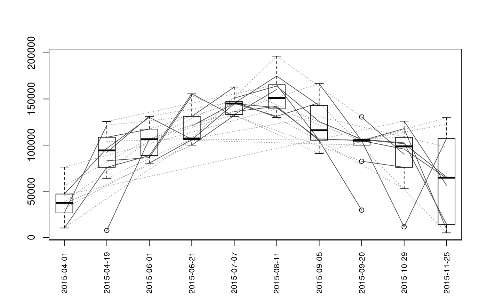
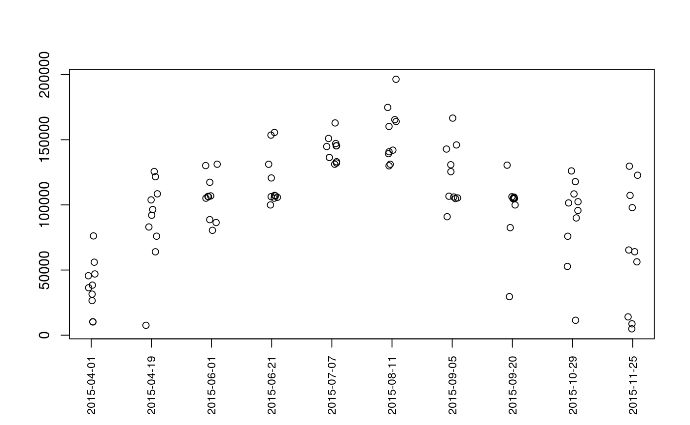
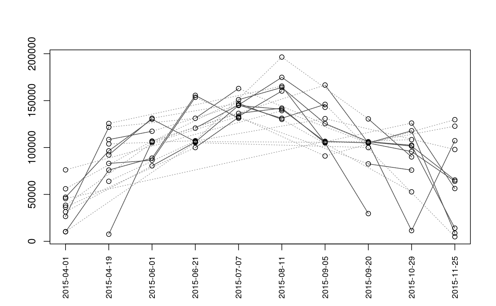
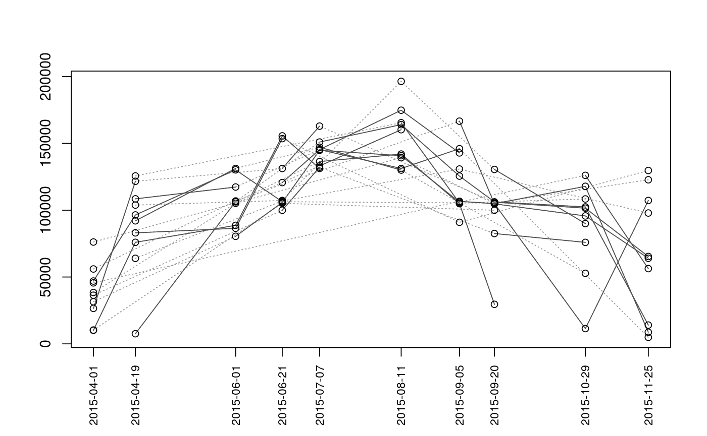
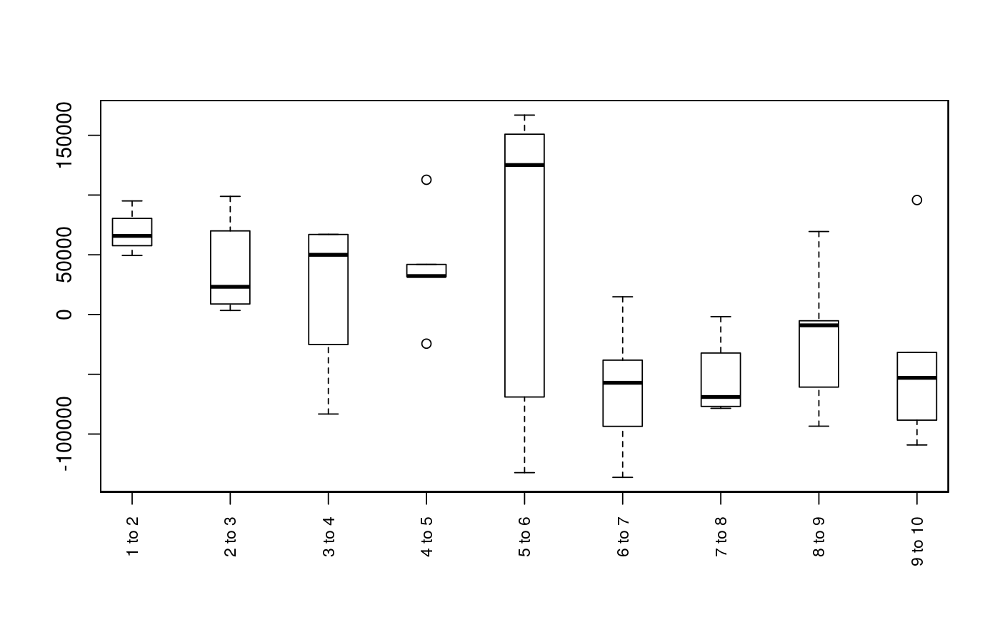

Plot Sequence of Observations
Plots the sequence of observations or movements of each individual (given as segment and vertex). This function is primarily intended for use with mouthdistbysurvey, but will also work with riverdistanceseq and upstreamseq.
plotseq(seqbysurvey, type = "boxplot", xlab = "", ylab = "", main = "", cex.axisX = 0.8, lowerbound = NULL, upperbound = NULL, boundtype = "negative", surveysareDates = F, ...)
Arguments
| seqbysurvey | A matrix returned from mouthdistbysurvey, riverdistanceseq, or upstreamseq. |
|---|---|
| type | The type of plot to generate. Options are
|
| xlab | X-axis label |
| ylab | Y-axis label |
| main | Plot title |
| cex.axisX | Character expansion factor for X-axis labels |
| lowerbound | An optional vector of lower survey bounds |
| upperbound | An optional vector of upper survey bounds |
| boundtype | Method of plotting survey bounds. Options are
|
| surveysareDates | If surveys are in Date format (see as.Date), a
value of |
| ... | Additional plotting parameters |
Note
Plots are intended as descriptive only. Any ANOVA-like inference that is suggested from these plots is strongly discouraged. The user is instead advised to use a mixed-effects model or some other inferential tool that accounts for repeated-measures and/or temporal autocorrelation.
Examples
data(Gulk, fakefish) x <- mouthdistbysurvey(unique=fakefish$fish.id, survey=fakefish$flight.date, seg=fakefish$seg, vert=fakefish$vert, rivers=Gulk) plotseq(seqbysurvey=x)plotseq(seqbysurvey=x, type="boxline")plotseq(seqbysurvey=x, type="dotplot")plotseq(seqbysurvey=x, type="dotline")plotseq(seqbysurvey=x, type="dotline", surveysareDates=TRUE)from_upstreamseq <- upstreamseq(unique=fakefish$fish.id, survey=fakefish$flight, seg=fakefish$seg, vert=fakefish$vert, rivers=Gulk) plotseq(seqbysurvey=from_upstreamseq)